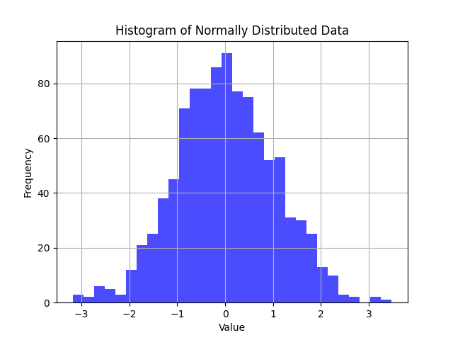
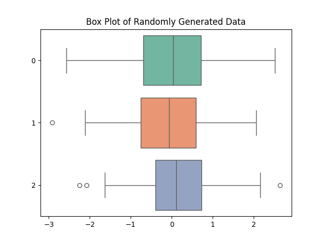
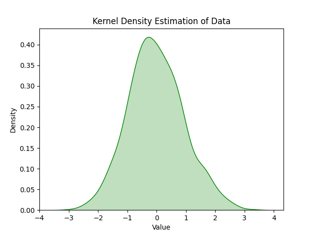
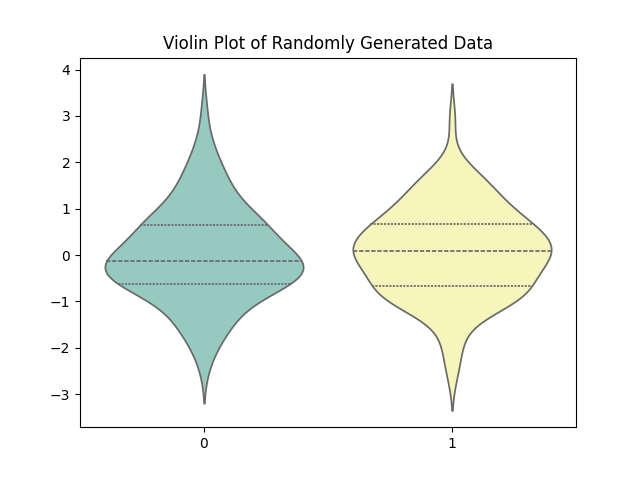
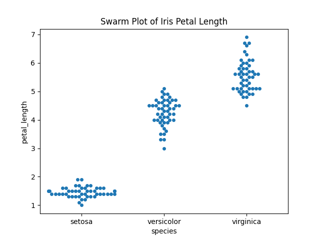
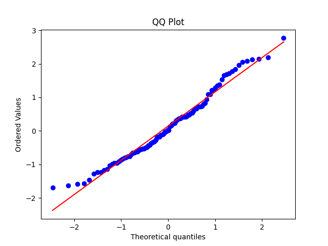
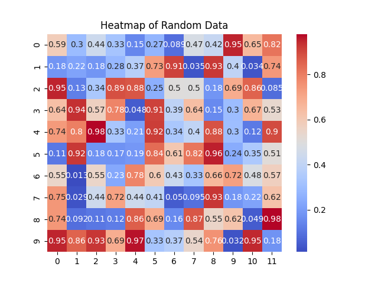
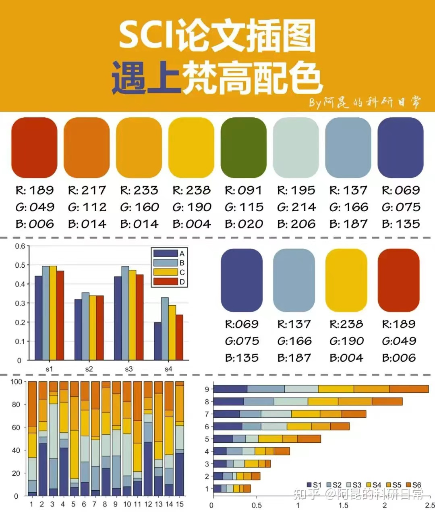

matplotlib是python中最常用的数据可视化工具，只要涉及到数据处理，都免不了或多或少和Numpy以及Matplotlib打交道，而且这两个工具笔者常常使用chatgpt大法来写，但是为了提高效率，常用图片还是最好记忆下来以便快速使用。
数据直方图
数据直方图(Histogram)通过将数据划分为区间或分段，并表示每个分段内的数据点数量，让我们可以检查数据的频率和分布情况。x 轴代表数值范围，y 轴代表频率或计数。
import matplotlib.pyplot as plt
import numpy as np
# Generating random data
data = np.random.normal(loc=0, scale=1, size=1000)
# Creating a histogram
plt.hist(data, bins=30, alpha=0.7, color='blue')
plt.title('Histogram of Normally Distributed Data')
plt.xlabel('Value')
plt.ylabel('Frequency')
plt.grid(True)
plt.show()

箱型图
箱形图（Box Plots）提供了数据集分布的简明摘要。它们分别显示最小值、第一四分位数 ($Q_1$)、中位数 ($Q_2$)、第三四分位数 ($Q_3$) 和最大值。方框表示四分位数间距 (IQR)，即第一$Q_1$和第三$Q_3$四分位数之间的范围。方框的高度表示中间50%数据的范围。
import matplotlib.pyplot as plt
import seaborn as sns
import numpy as np
# Generating random data
data = np.random.normal(loc=0, scale=1, size=(100, 3))
# Creating a box plot
sns.boxplot(data=data, orient='h', palette="Set2")
plt.title('Box Plot of Randomly Generated Data')
plt.show()

核密度估计图
核密度估计 (KDE) 是一种非参数技术，用于估计数据集的概率密度函数。通过提供近似分布的平滑曲线，KDE 有助于发现潜在的模式。KDE 图可与直方图结合使用，以更清晰地直观显示分布情况。
import matplotlib.pyplot as plt
import seaborn as sns
import numpy as np
# Generating random data
data = np.random.normal(loc=0, scale=1, size=1000)
# Creating a KDE plot
sns.kdeplot(data, shade=True, color='green')
plt.title('Kernel Density Estimation of Data')
plt.xlabel('Value')
plt.ylabel('Density')
plt.show()

在本例中，我们使用 kdeplot 创建了一个核密度函数图。通过该图，有助于了解数据点的概率密度，直观的显示数据的分布。
小提琴图
小提琴图结合了箱形图和核密度函数估计图的优点。它们通过在箱形图中央的两侧显示镜像密度图来紧凑地表示分布。小提琴图可以简明地显示分布的形状、数据集中程度和任何潜在的异常值。
import matplotlib.pyplot as plt
import seaborn as sns
import numpy as np
# Generating random data
data = np.random.normal(loc=0, scale=1, size=(100, 2))
# Creating a violin plot
sns.violinplot(data=data, inner="quartile", palette="Set3")
plt.title('Violin Plot of Randomly Generated Data')
plt.show()

蜂群图
蜂群图可以有效直观地显示分类数据和单个数据点的分布情况。它水平显示每个数据点，并在数据点重叠时进行抖动，从而更容易查看每个类别内的分布情况。当类别数量较少且每个类别内有大量数据点时，蜂群图尤其有用。
import seaborn as sns
import matplotlib.pyplot as plt
# Generating random categorical data
categories = ['A', 'B', 'C']
data = sns.load_dataset("iris")
# Creating a swarm plot
sns.swarmplot(x='species', y='petal_length', data=data)
plt.title('Swarm Plot of Iris Petal Length')
plt.show()

QQ图
Quantile-Quantile图又叫做QQ图，它主要用于评估分布与理论分布（如正态分布）的拟合程度。QQ 图将观测数据的量值与理论分布的预期量值进行比较。偏离直线表示偏离假定分布，有助于识别偏离正态分布或其他假定分布的情况。
import numpy as np
import scipy.stats as stats
import matplotlib.pyplot as plt
# Generating random data
data = np.random.normal(loc=0, scale=1, size=100)
# Creating QQ plot
stats.probplot(data, dist="norm", plot=plt)
plt.title('QQ Plot')
plt.show()

heatmap
热力图是可视化二维数据分布的有效方法。通过在网格上用颜色表示数据值，热力图有助于识别两个变量之间的聚类和相关性。在处理大型数据集或多维数据时，热图尤其有用。
import seaborn as sns
import matplotlib.pyplot as plt
import numpy as np
# Generating a random dataset
data = np.random.rand(10, 12)
# Creating a heatmap
sns.heatmap(data, annot=True, cmap='coolwarm')
plt.title('Heatmap of Random Data')
plt.show()

一个个人向的配色

更多详见原文